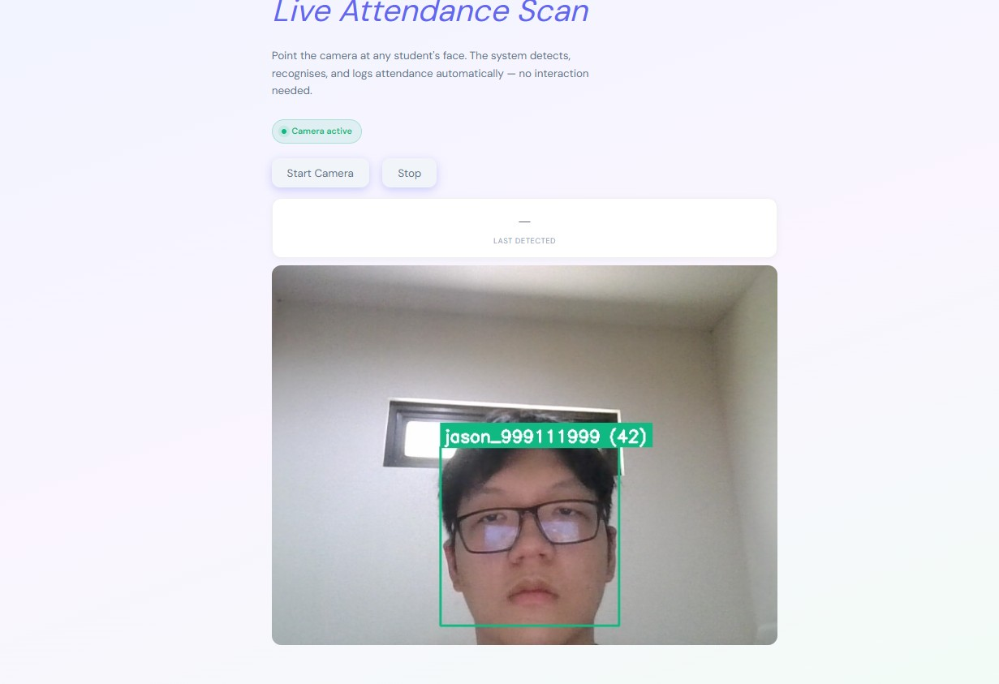
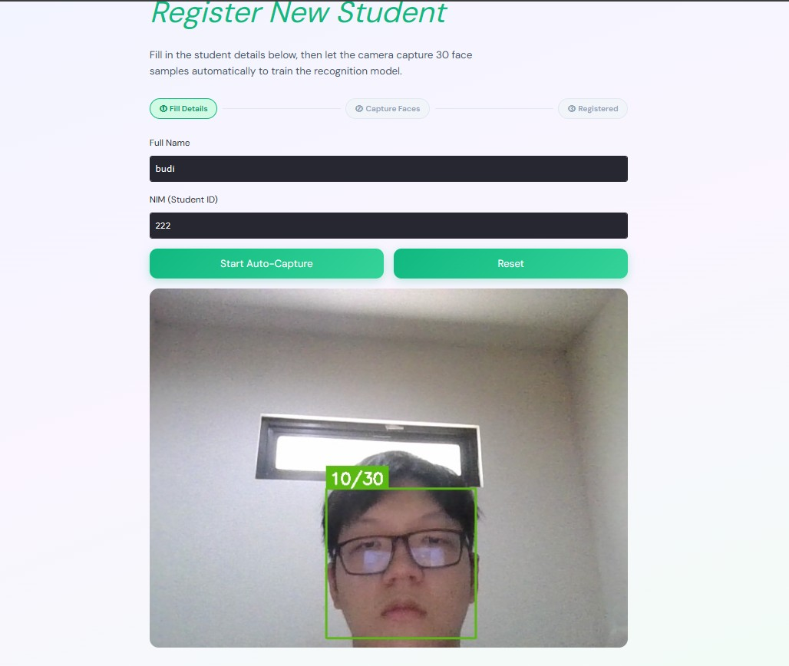
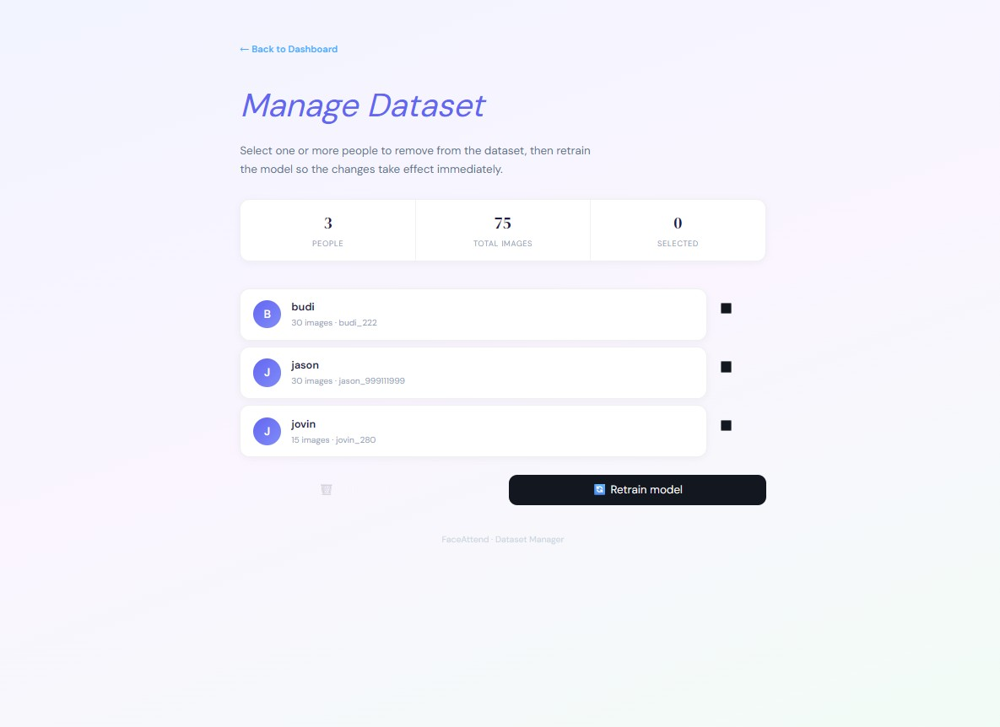

FaceAttend is a real-time facial recognition attendance system built for a Computer Vision course project. Roll calls and paper sign-in sheets are slow and easy to fake — FaceAttend replaces both by detecting and recognizing a student's face through a webcam and logging their attendance automatically, with no interaction needed from the student. The system runs on Haar Cascade for face detection and Local Binary Pattern Histogram (LBPH) for recognition, deliberately chosen to stay lightweight enough to run on ordinary consumer hardware rather than requiring a GPU or specialized camera.
Manual attendance doesn't scale cleanly, and it's easy to game — a friend can sign in on your behalf, and a roll call takes time away from actual class. As class sizes grow, keeping accurate, fraud-resistant attendance records becomes a real administrative burden.
The system follows a six-stage computer vision workflow, from capturing a student's face at registration through to logging attendance from a live video stream.
At registration, a student enters their name and NIM (student ID), and the webcam captures 30 face samples under slightly different poses and expressions to give the model useful variation to train on.
Each frame is converted to grayscale, then scanned by OpenCV's pre-trained Haar Cascade classifier, which looks for edge and rectangular features characteristic of a face and returns a bounding box.
Detected faces smaller than 120×120px are filtered out, the face is cropped to remove background, resized to a fixed 200×200px, and saved into that student's labeled dataset folder.
Every student's folder is loaded, paired with a numeric label, and passed to OpenCV's LBPH recognizer, which learns a histogram of local texture patterns as each student's facial descriptor.
Live frames are detected, cropped and resized the same way, then matched against the trained model. A confidence score under 70 logs the student with a green box; 70 or above is labeled Unknown with a red box.
Accuracy, False Acceptance Rate, False Rejection Rate and processing latency (FPS) are tracked to judge whether the system is both accurate and fast enough for real classroom use.
The system is deployed as a browser-based app rather than a local script, so it needed real-time video streaming and safe concurrent writes built in from the start.
Three screens cover the full lifecycle: taking attendance, registering a new student, and managing who's in the dataset.
Point the camera at a face and the system detects, recognizes, and logs attendance automatically — recognized students get a green box with their name and confidence score.
A step-by-step flow (Fill Details → Capture Faces → Registered) walks a new student through providing their name and NIM, then auto-captures 30 face samples with a live progress counter.
View every registered person with their image count, select one or more to remove, and retrain the model in place so changes take effect immediately.
A threading lock ensures only one video callback thread writes to the attendance log at a time, so concurrent detections can't corrupt the file or create duplicate entries.



Tested live with 6 participants (180 training images total, 30 per person), the system reached an estimated 95% recognition accuracy while holding 20–30 FPS on ordinary CPU hardware — with a strict <70 confidence threshold keeping false accepts to a minimum. The remaining ~5% error was mostly false rejections when a participant turned more than 15–20° off-frontal, since Haar Cascade is trained on near-frontal faces.
Haar Cascade's pre-trained model is frontal-only — turning the head past roughly 15–20° causes the face to go undetected.
LBPH tolerates moderate lighting changes, but extreme shifts (registering in a dim room, then scanning in bright sunlight) can push the distance score past the threshold and produce a false "Unknown".
The system can't yet tell a live face from a printed photo held up to the camera, leaving it open to spoofing.
Attendance is currently appended to a plain .txt log, which won't scale to long-term, large-scale use.
Working within a six-person team, I contributed to the proposal, the written report, and the codebase, and ran the project's initial demo.
The team scoped three concrete upgrades to take FaceAttend from a working prototype toward production: swapping Haar Cascade and LBPH for deep-learning detection and recognition (SSD or RetinaFace, plus FaceNet embeddings with an SVM) to handle pose and lighting variation more gracefully; adding blink-detection or depth-sensing liveness checks to prevent photo spoofing; and migrating attendance logs from a flat text file into a proper relational database to support real analytics, like absence-rate dashboards.